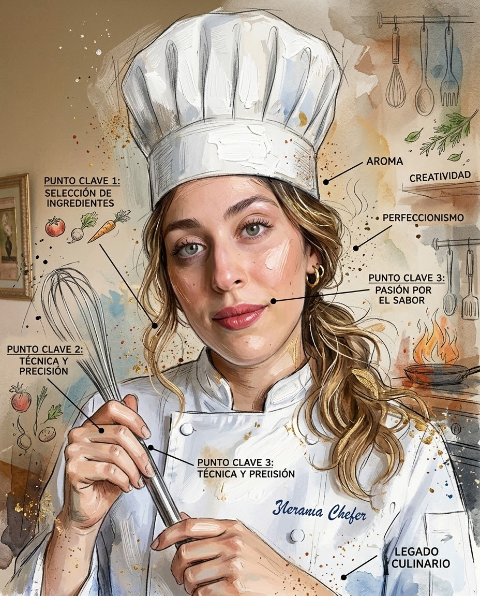

Colección de Cocina Tradicional
Recetas de Siham
Un viaje gastronómico repleto de sabores auténticos, aromas especiados y secretos culinarios pasados de generación en generación.
Menú Completo
Índice de Recetas
15 Especialidades Culinarias

Siham
"La cocina es el arte de compartir el corazón en cada plato."